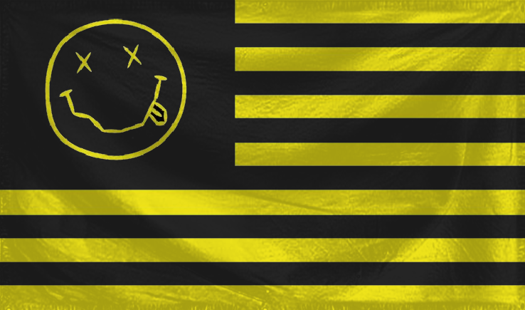
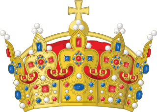
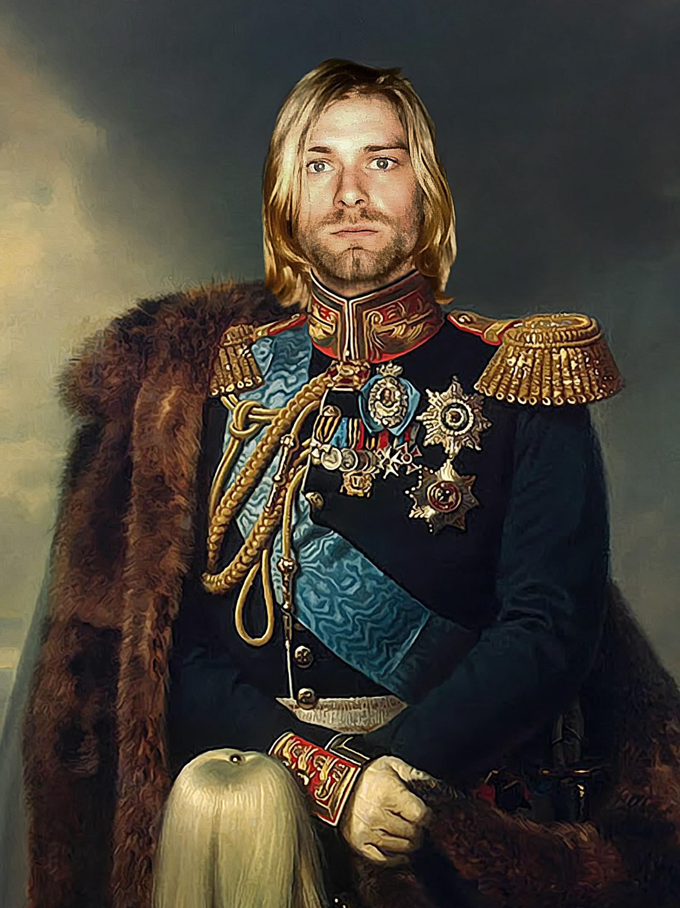

Freddie Mercury uznaje swoje rozszczenia do tronu poprzez swoją karizmatyczną osobowość i ogromny wpływ,
jaki ma na świat muzyki. Jego legendarne osiągnięcia sceniczne, charyzma i oddanie dla sztuki sprawiają,
że jest naturalnym liderem. Ponadto, Mercury posługuje się swoją niepowtarzalną energią i talentem do
zjednywania ludzi, co sprawia, że mieszkańcy wioski szybko przekonują się do jego pretensji do tronu.
NIRVANIA



Kurt Cobain
Kurt Cobain jako władca wioski jest postacią, która stara się przede wszystkim dbać o dobro swoich mieszkańców.
Jego wizją jest stworzenie miejsca, gdzie każdy może znaleźć swoje miejsce i być akceptowanym. Jest wrażliwy na potrzeby
innych i często podejmuje decyzje z myślą o dobru wspólnoty. Jednakże, jego wewnętrzne konflikty i niepokoje mogą
wpływać na jego zdolność do skutecznego zarządzania wioską. Mimo to, jest postacią, którą ludzie uwielbiają i szanują
za autentyczność i oddanie swojej sztuce oraz wspólnocie.